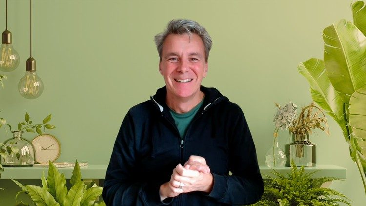

Into the Nest · Biophilic home design
You already know what your home needs. Biophilic design is how you learn to listen to it.
Light, materials, plants, colour, and the rooms you actually sit in. A beginner's course for homeowners and renters who want a home that feels right, from thirty years of designing homes that suit the people in them.
Saved a thousand pictures. Home still feels slightly off.
Most people decorate by imitation. They save other people's rooms, buy the odd thing, and are quietly disappointed when it arrives. The pictures are not the problem. The method is.
The information you need is already in your own four walls: where you sit at 7am, which room you avoid, where the light lands in the afternoon. Biophilic design is the discipline of noticing that, and then working with it. Most of what changes a room costs very little.
What biophilic design is
Nature as pattern, not decoration
Biophilia means a love of living things. Biophilic design brings that into a home in ways that work on the body: daylight that reaches further into a room, materials with grain and weight, plants placed where you look rather than where there is a gap, colour taken from outside the window.
It is not "add plants". It is light, material and rhythm, arranged for the people who live there.
The course
Transform Your Home with Biophilic Design: A Beginner's Guide
Ten lessons, just under three hours of video, three short ebooks included. No design training needed. Watch on any device, at your own pace.
Enrol on Udemy
Preview on UdemyRead a room first
Sit in it and read it before you buy anything for it. The room audit, from Lesson 1 onwards.
More daylight
Get more from the windows you already have, and put the light where you need it.
Plants and materials
Choose plants and natural materials that suit the room and the people in it, and keep them alive.
A plan for the whole home
Build a palette from what is outside the window, make one restorative corner on a small budget, then put it together.
The ten lessons
- Reconnecting with nature in your home: the fundamentals
- The principles behind biophilic design, and why they work on us
- Bringing natural elements into the rooms you have
- Daylight: getting more from the windows you already own
- Plants and greenery: choosing, placing, keeping alive
- Natural materials and textures
- Colour palettes and patterns taken from nature
- Spaces for rest and recovery
- Biophilic design on a budget
- Putting it all together: your biophilic home
Who it is for
Homeowners and renters with no design background who want a calmer and healthier home, and are willing to do a little noticing before a little buying. Not for anyone after quick styling tips.
Enrol on UdemyPrefer to ask first? Use the form below.
What students say
From the Udemy reviews
Written by students on Udemy, quoted as they wrote them. Shortened where marked.
After completing the introduction I can't wait to continue. The content in this course is amazing and the resources available are above and beyond. Exceptional value for money.
Merredith H., January 2025
I really enjoyed this course. It was very informative and easy to understand. It really helped me understand biophilic design and how to create it in my spaces.
Desiree E., April 2025
Introducing the concepts in an orderly manner and doing so, from the point of view of someone that not only knows about the subject matter, but has worked with it. Very happy so far.
Hans H., December 2025 (shortened)
Super insightful, highly exceeded my expectations. I wish there would be more of William's courses, to deepen our knowledge.
Vivien K., February 2025 (shortened)
All reviews are on the course page on Udemy.
Who is behind this
William Ringsdorf
Thirty years in architectural practice in the UK and Germany, more than 750 homes designed, from social housing to one-off houses. A childhood on building sites and a lasting fondness for the treehouses in the old Tarzan films. Fourteen years of annual stays in Kerala shaped a conviction that a home is an instrument of wellbeing, not a gallery.
Into the Nest is where that experience is turned towards homeowners: the course, the weekly Heartsease letter, and the occasional conversation about a home that does not feel right yet.
Contact
Get in touch
A question about the course, a home that puzzles you, or anything else. Replies come from William directly, usually within a working day or two.
Your details are used only to reply to you. No list, no newsletter, unless you ask for one. Privacy.